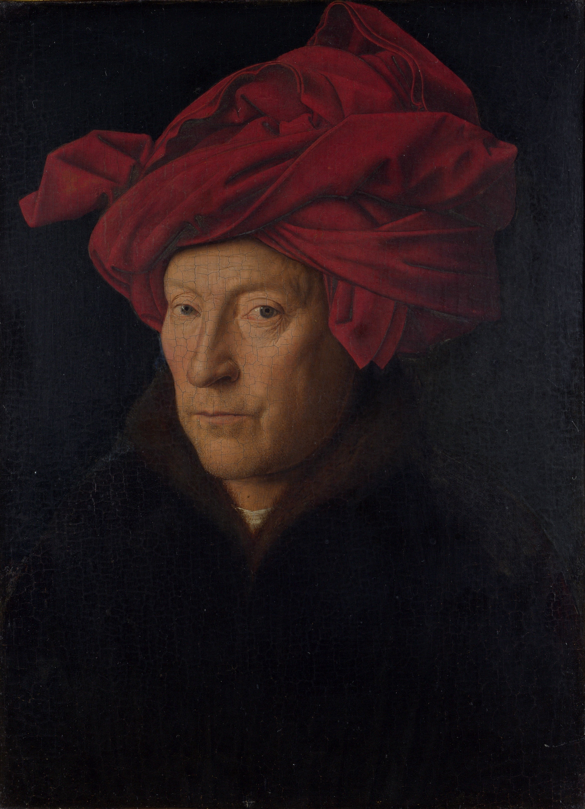

6 de Enero 1432
Escrito el 12.21.2012
Jan van Eyck (/væn ˈaɪk/ van EYEK, Dutch: [ˈjɑn vɑn ˈɛik]; c. before 1390 – 9 July 1441) was a Flemish painter active in Bruges. He is one of the early innovators of what became known as Early Netherlandish painting, and one of the most significant representatives of Early Northern Renaissance art. The surviving records of his early life indicate that he was born around 1380–1390, most likely in Maaseik (then Maaseyck, hence his name), in present-day Belgium. He took employment in the Hague around 1422, when he was already a master painter with workshop assistants, and employed as painter and valet de chambre with John III the Pitiless, ruler of Holland and Hainaut. He was then employed in Lille as court painter to Philip the Good, Duke of Burgundy after John's death in 1425, until he moved to Bruges in 1429 where he lived until his death. He was highly regarded by Philip and undertook a number of diplomatic visits abroad, including to Lisbon in 1428 to explore the possibility of a marriage contract between the duke and Isabella of Portugal.[1]